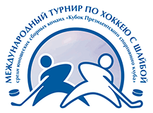

Международный турнир по хоккею с шайбой среди юниорских сборных команд «Кубок Президентского спортивного клуба» является первым международным детско-юношеским турниром по хоккею, проводимым в Беларуси на традиционной основе. В соревнованиях принимают участие хоккеисты от 15 до 18 лет.